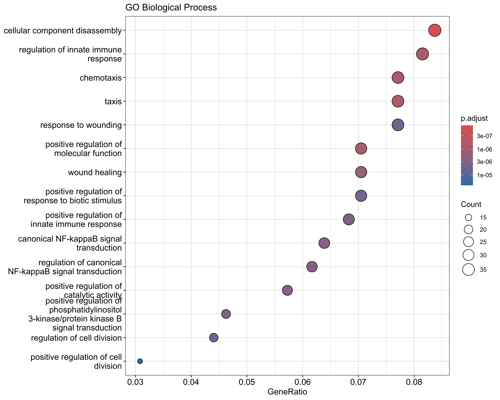
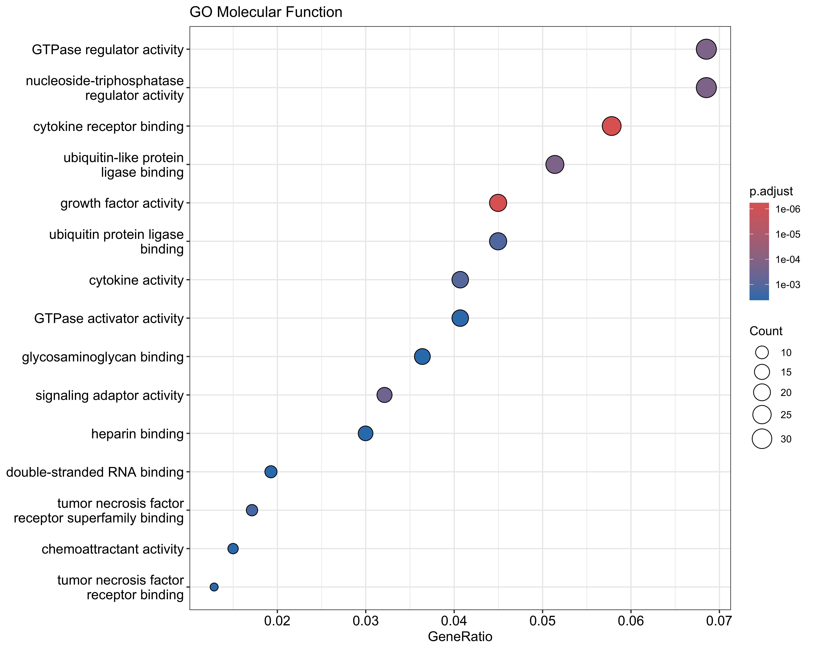
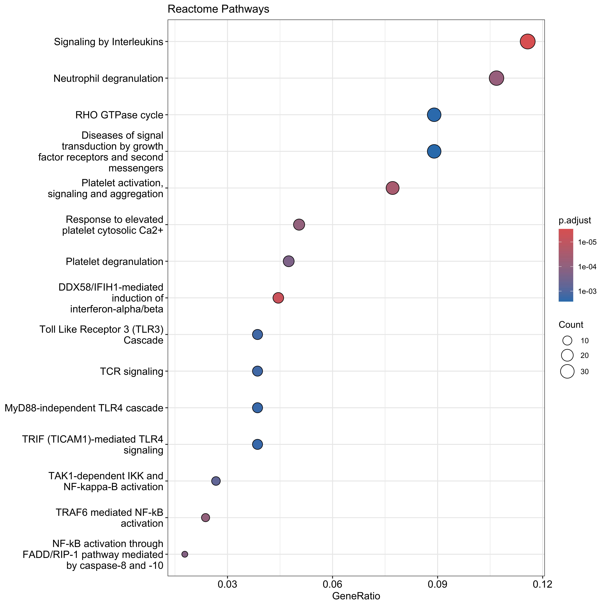

Pathway Enrichment Analysis (Analysis D)
Analysis Script
2026-07-15
Last updated: 2026-07-15
Checks: 7 0
Knit directory: RESOLVE_SerumProteomics/
This reproducible R Markdown analysis was created with workflowr (version 1.7.2). The Checks tab describes the reproducibility checks that were applied when the results were created. The Past versions tab lists the development history.
Great! Since the R Markdown file has been committed to the Git repository, you know the exact version of the code that produced these results.
Great job! The global environment was empty. Objects defined in the global environment can affect the analysis in your R Markdown file in unknown ways. For reproduciblity it’s best to always run the code in an empty environment.
The command set.seed(20250204) was run prior to running
the code in the R Markdown file. Setting a seed ensures that any results
that rely on randomness, e.g. subsampling or permutations, are
reproducible.
Great job! Recording the operating system, R version, and package versions is critical for reproducibility.
Nice! There were no cached chunks for this analysis, so you can be confident that you successfully produced the results during this run.
Great job! Using relative paths to the files within your workflowr project makes it easier to run your code on other machines.
Great! You are using Git for version control. Tracking code development and connecting the code version to the results is critical for reproducibility.
The results in this page were generated with repository version d69f0e1. See the Past versions tab to see a history of the changes made to the R Markdown and HTML files.
Note that you need to be careful to ensure that all relevant files for
the analysis have been committed to Git prior to generating the results
(you can use wflow_publish or
wflow_git_commit). workflowr only checks the R Markdown
file, but you know if there are other scripts or data files that it
depends on. Below is the status of the Git repository when the results
were generated:
Ignored files:
Ignored: .DS_Store
Ignored: .Rhistory
Ignored: .Rproj.user/
Ignored: analysis/.DS_Store
Ignored: data/.DS_Store
Ignored: output/.DS_Store
Ignored: output/3.1_veSSc_Athritis /
Ignored: output/3.2_veSScarthritis_vs_SScarthritis /
Ignored: output/3.2_veSScarthritis_vs_SScarthritis/
Ignored: output/Analysis_Cosimo/
Untracked files:
Untracked: analysis/OLD/
Untracked: analysis/RESOLVE_TopProteinsBoxplots.Rmd
Untracked: analysis/hits_primary_dMRSS_year.csv
Untracked: analysis/output/
Untracked: analysis/results_continuous_RvsP_properLogFC.csv
Untracked: analysis/serum_baseline_confound.PDF
Untracked: code/11102024_PreliminaryLook_Preprocessing.Rmd
Untracked: code/14102024_MetaData.csv
Untracked: code/Final_FinalList_ArthritisControls_2024.08.15.xlsx
Untracked: data/ASTRID_ILDonset_PROTEOMIC_CB3groups.xlsx
Untracked: data/ASTRID_ILDonset_PROTEOMIC_COSIMO.xlsx
Untracked: data/Metadata_veSSC.xlsx
Untracked: data/Metadata_veSSC_vs_SSc_arthritis_final.xlsx
Untracked: data/P2024-199-OLI_80_NPX_2024-10-10.parquet
Untracked: data/PEA/
Untracked: data/PRECISE_Pietro.xlsx
Untracked: data/metadata.xlsx
Untracked: hits_primary_dMRSS_year.csv
Untracked: output/AnalysisD_PathwayEnrichment/
Untracked: output/ILD_Onset_Analysis/
Untracked: output/Pietro_InterferonScore/
Untracked: output/PreSScArthritis_vs_SScArthritis/
Untracked: output/PreSSc_Synovitis/
Untracked: output/RESOLVE_EnrichmentAnalysis/
Untracked: output/SSc_Skin_Regression_Analysis/
Untracked: output/SSc_veSSc_vs_SSc_Arthritis_Analysis_Clean/
Untracked: output/UpdatedAnalysisPipelineCosimo/
Untracked: output/arthritis_analysis/
Untracked: output/mRSSBaseline_Covariate/
Untracked: results_continuous_RvsP_properLogFC.csv
Untracked: serum_baseline_confound.png
Untracked: site_libs/
Unstaged changes:
Modified: .Rprofile
Modified: .gitattributes
Modified: .gitignore
Modified: README.md
Modified: RESOLVE_SerumProteomics.Rproj
Modified: _workflowr.yml
Deleted: analysis/PreSSc/PreSScArthritis_vs_SScArthritis.Rmd
Modified: analysis/RESOLVE_SSc_Skin_Regression_Analysis.Rmd
Deleted: analysis/SSc_Skin_Regression_Analysis.Rmd
Modified: analysis/about.Rmd
Modified: analysis/index.Rmd
Modified: analysis/license.Rmd
Modified: code/README.md
Modified: data/README.md
Modified: output/README.md
Note that any generated files, e.g. HTML, png, CSS, etc., are not included in this status report because it is ok for generated content to have uncommitted changes.
These are the previous versions of the repository in which changes were
made to the R Markdown
(analysis/RESOLVE_AnalysisD_PathwayEnrichment.Rmd) and HTML
(docs/RESOLVE_AnalysisD_PathwayEnrichment.html) files. If
you’ve configured a remote Git repository (see
?wflow_git_remote), click on the hyperlinks in the table
below to view the files as they were in that past version.
| File | Version | Author | Date | Message |
|---|---|---|---|---|
| Rmd | d69f0e1 | astridhofman7 | 2026-07-15 | newpathwayenrichment |
| html | 6327bdd | astridhofman7 | 2026-07-09 | Build site. |
| Rmd | 8155d7a | astridhofman7 | 2026-07-09 | Update index and analyses |
Rationale
Over-representation analysis (ORA) asks whether the hit proteins fall
into a pathway more often than expected by chance drawn from the
same pool they came from. On a targeted Olink panel that pool
is not the genome — the panel is deliberately enriched for
secreted, immune and inflammatory proteins. Testing against a genome
background would therefore credit the panel’s own composition as if it
were biology. The correct background (universe) is the set
of proteins actually tested here: those passing the
AveExpr > 0 detection filter, which is also the only
pool from which a hit could be drawn.
GSEA needs no universe: it scores the full ranked list,
so the ranking itself is the background.
Load results, define tested set and hits
results <- read.csv(here::here("output", "SSc_Skin_Regression_Analysis",
"results_continuous_Regressor_vs_Progressor.csv"))
# tested set: eligible-to-be-hit pool AND the ORA background
tested <- results %>%
filter(AveExpr > 0) %>%
mutate(adj.P.Val = p.adjust(P.Value, method = "BH"))
hits_fdr <- tested %>% filter(adj.P.Val < 0.2) %>% arrange(P.Value)
cat("Panel:", nrow(results),
" | tested (AveExpr>0):", nrow(tested),
" | hits (FDR<0.2):", nrow(hits_fdr), "\n")Panel: 5440 | tested (AveExpr>0): 3494 | hits (FDR<0.2): 599 cat("Up in Regressors:", sum(hits_fdr$logFC > 0),
" | Up in Progressors:", sum(hits_fdr$logFC < 0), "\n")Up in Regressors: 575 | Up in Progressors: 24 Map symbols to Entrez (hits and universe, identically)
hit_entrez <- bitr(hits_fdr$Assay, "SYMBOL", "ENTREZID", org.Hs.eg.db)
universe_entrez <- bitr(tested$Assay, "SYMBOL", "ENTREZID", org.Hs.eg.db)
cat("Mapped hits:", nrow(hit_entrez), "of", nrow(hits_fdr),
" | mapped universe:", nrow(universe_entrez), "of", nrow(tested), "\n")Mapped hits: 592 of 599 | mapped universe: 3434 of 3494 hit_ids <- hit_entrez$ENTREZID
univ_ids <- universe_entrez$ENTREZIDGO over-representation (panel-aware background)
run_go <- function(ont) {
enrichGO(gene = hit_ids, universe = univ_ids, OrgDb = org.Hs.eg.db,
ont = ont, pAdjustMethod = "BH",
pvalueCutoff = 0.05, qvalueCutoff = 0.2, readable = TRUE)
}
go_bp <- run_go("BP"); go_mf <- run_go("MF"); go_cc <- run_go("CC")
# Collapse semantically redundant GO terms (keeps the most significant
# representative of each cluster). cutoff = similarity threshold (0.7 = default);
# lower it (e.g. 0.6) for more aggressive pruning.
simplify_go <- function(obj) {
if (is.null(obj) || nrow(obj) == 0) return(obj)
simplify(obj, cutoff = 0.7, by = "p.adjust", select_fun = min, measure = "Wang")
}
go_bp <- simplify_go(go_bp); go_mf <- simplify_go(go_mf); go_cc <- simplify_go(go_cc)
for (nm in c("BP","MF","CC")) {
g <- get(paste0("go_", tolower(nm)))
cat(sprintf("GO %s (after simplify): %d terms\n", nm, if (is.null(g)) 0 else nrow(g)))
}GO BP (after simplify): 24 terms
GO MF (after simplify): 8 terms
GO CC (after simplify): 7 termsGO Biological Process
if (!is.null(go_bp) && nrow(go_bp) > 0) {
p <- dotplot(go_bp, showCategory = 15, title = "GO Biological Process")
ggsave(here::here("output", analysis_name, "GO_BP_dotplot.pdf"), p, width = 10, height = 10)
print(p)
} else cat("No significant GO-BP terms.\n")
| Version | Author | Date |
|---|---|---|
| 6327bdd | astridhofman7 | 2026-07-09 |
GO Molecular Function
if (!is.null(go_mf) && nrow(go_mf) > 0) {
p <- dotplot(go_mf, showCategory = 15, title = "GO Molecular Function")
ggsave(here::here("output", analysis_name, "GO_MF_dotplot.pdf"), p, width = 10, height = 10)
print(p)
} else cat("No significant GO-MF terms.\n")
| Version | Author | Date |
|---|---|---|
| 6327bdd | astridhofman7 | 2026-07-09 |
GO Cellular Component
if (!is.null(go_cc) && nrow(go_cc) > 0) {
p <- dotplot(go_cc, showCategory = 15, title = "GO Cellular Component")
ggsave(here::here("output", analysis_name, "GO_CC_dotplot.pdf"), p, width = 10, height = 10)
print(p)
} else cat("No significant GO-CC terms.\n")
| Version | Author | Date |
|---|---|---|
| 6327bdd | astridhofman7 | 2026-07-09 |
KEGG and Reactome (same background)
kegg <- enrichKEGG(gene = hit_ids, universe = univ_ids,
organism = "hsa", pvalueCutoff = 0.05, pAdjustMethod = "BH")
# enrichKEGG returns Entrez IDs in geneID -> convert to symbols for traceability
if (!is.null(kegg) && nrow(kegg) > 0)
kegg <- setReadable(kegg, OrgDb = org.Hs.eg.db, keyType = "ENTREZID")
reactome <- enrichPathway(gene = hit_ids, universe = univ_ids,
pvalueCutoff = 0.05, pAdjustMethod = "BH", readable = TRUE)
cat("KEGG:", if (is.null(kegg)) 0 else nrow(kegg), "terms | Reactome:",
if (is.null(reactome)) 0 else nrow(reactome), "terms\n")KEGG: 17 terms | Reactome: 13 termsKEGG
if (!is.null(kegg) && nrow(kegg) > 0) {
p <- dotplot(kegg, showCategory = 15, title = "KEGG Pathways")
ggsave(here::here("output", analysis_name, "KEGG_dotplot.pdf"), p, width = 10, height = 10)
print(p)
} else cat("No significant KEGG terms.\n")
| Version | Author | Date |
|---|---|---|
| 6327bdd | astridhofman7 | 2026-07-09 |
Reactome
if (!is.null(reactome) && nrow(reactome) > 0) {
p <- dotplot(reactome, showCategory = 15, title = "Reactome Pathways")
ggsave(here::here("output", analysis_name, "Reactome_dotplot.pdf"), p, width = 10, height = 8)
print(p)
} else cat("No significant Reactome terms.\n")
| Version | Author | Date |
|---|---|---|
| 6327bdd | astridhofman7 | 2026-07-09 |
GSEA (full ranked tested list, no universe)
ranks <- tested %>%
inner_join(bitr(tested$Assay, "SYMBOL", "ENTREZID", org.Hs.eg.db),
by = c("Assay" = "SYMBOL")) %>%
arrange(desc(t))
gene_list <- setNames(ranks$t, ranks$ENTREZID)
set.seed(1)
gsea_go <- gseGO(gene_list, OrgDb = org.Hs.eg.db, ont = "BP",
pAdjustMethod = "BH", pvalueCutoff = 0.05, verbose = FALSE)
# simplify works on gseGO results too; then convert leading-edge IDs to symbols
if (!is.null(gsea_go) && nrow(gsea_go) > 0) {
gsea_go <- simplify(gsea_go, cutoff = 0.7, by = "p.adjust", select_fun = min)
gsea_go <- setReadable(gsea_go, OrgDb = org.Hs.eg.db, keyType = "ENTREZID")
}
cat("GSEA GO-BP (after simplify):", if (is.null(gsea_go)) 0 else nrow(gsea_go), "terms\n")GSEA GO-BP (after simplify): 384 termsif (!is.null(gsea_go) && nrow(gsea_go) > 0) {
p <- dotplot(gsea_go, showCategory = 10, split = ".sign",
title = "GSEA GO-BP (NES)") + facet_grid(. ~ .sign)
ggsave(here::here("output", analysis_name, "GSEA_GO_BP_dotplot.pdf"), p, width = 11, height = 8)
print(p)
} else cat("No significant GSEA GO-BP terms.\n")
Result tables
wr <- function(obj, file) if (!is.null(obj) && nrow(obj) > 0)
write.csv(as.data.frame(obj), here::here("output", analysis_name, file), row.names = FALSE)
wr(go_bp, "GO_BP.csv"); wr(go_mf, "GO_MF.csv"); wr(go_cc, "GO_CC.csv")
wr(kegg, "KEGG.csv"); wr(reactome, "Reactome.csv")
if (!is.null(gsea_go)) wr(gsea_go, "GSEA_GO_BP.csv")
if (!is.null(go_bp) && nrow(go_bp) > 0)
knitr::kable(head(as.data.frame(go_bp)[, c("Description","GeneRatio","BgRatio","p.adjust")], 15),
caption = "Top GO-BP terms (panel-aware background)")| Description | GeneRatio | BgRatio | p.adjust | |
|---|---|---|---|---|
| GO:0022411 | cellular component disassembly | 46/560 | 132/3157 | 0.0011384 |
| GO:0006412 | translation | 39/560 | 105/3157 | 0.0011384 |
| GO:0160307 | protein biosynthetic process | 39/560 | 105/3157 | 0.0011384 |
| GO:0051246 | regulation of protein metabolic process | 100/560 | 376/3157 | 0.0017711 |
| GO:0002753 | cytoplasmic pattern recognition receptor signaling pathway | 19/560 | 41/3157 | 0.0094263 |
| GO:0006914 | autophagy | 42/560 | 131/3157 | 0.0123129 |
| GO:0061919 | process utilizing autophagic mechanism | 42/560 | 131/3157 | 0.0123129 |
| GO:0010608 | post-transcriptional regulation of gene expression | 34/560 | 99/3157 | 0.0129873 |
| GO:0002757 | immune response-activating signaling pathway | 46/560 | 150/3157 | 0.0142012 |
| GO:0009894 | regulation of catabolic process | 63/560 | 227/3157 | 0.0146650 |
| GO:0080134 | regulation of response to stress | 101/560 | 407/3157 | 0.0146650 |
| GO:0002833 | positive regulation of response to biotic stimulus | 35/560 | 108/3157 | 0.0214343 |
| GO:0006417 | regulation of translation | 25/560 | 69/3157 | 0.0241009 |
| GO:0051302 | regulation of cell division | 23/560 | 62/3157 | 0.0258721 |
| GO:0009057 | macromolecule catabolic process | 80/560 | 316/3157 | 0.0259407 |
Session Info
sessionInfo()R version 4.6.1 (2026-06-24)
Platform: aarch64-apple-darwin23
Running under: macOS Tahoe 26.5.2
Matrix products: default
BLAS: /Library/Frameworks/R.framework/Versions/4.6/Resources/lib/libRblas.0.dylib
LAPACK: /Library/Frameworks/R.framework/Versions/4.6/Resources/lib/libRlapack.dylib; LAPACK version 3.12.1
locale:
[1] en_US.UTF-8/en_US.UTF-8/en_US.UTF-8/C/en_US.UTF-8/en_US.UTF-8
time zone: Europe/Zurich
tzcode source: internal
attached base packages:
[1] stats4 stats graphics grDevices utils datasets methods
[8] base
other attached packages:
[1] enrichplot_1.32.0 ReactomePA_1.56.0 org.Hs.eg.db_3.23.1
[4] AnnotationDbi_1.74.0 IRanges_2.46.0 S4Vectors_0.50.1
[7] Biobase_2.72.0 BiocGenerics_0.58.1 generics_0.1.4
[10] clusterProfiler_4.20.0 ggplot2_4.0.3 dplyr_1.2.1
[13] here_1.0.2 workflowr_1.7.2
loaded via a namespace (and not attached):
[1] RColorBrewer_1.1-3 rstudioapi_0.19.0 jsonlite_2.0.0
[4] tidydr_0.0.6 magrittr_2.0.5 ggtangle_0.1.2
[7] farver_2.1.2 rmarkdown_2.31 fs_2.1.0
[10] vctrs_0.7.3 memoise_2.0.1 ggtree_4.2.0
[13] htmltools_0.5.9 gridGraphics_0.5-1 sass_0.4.10
[16] bslib_0.11.0 htmlwidgets_1.6.4 plyr_1.8.9
[19] httr2_1.2.3 cachem_1.1.0 whisker_0.4.1
[22] igraph_2.3.3 lifecycle_1.0.5 pkgconfig_2.0.3
[25] Matrix_1.7-5 R6_2.6.1 fastmap_1.2.0
[28] gson_0.2.0 digest_0.6.39 aplot_0.3.1
[31] ggnewscale_0.5.2 patchwork_1.3.2 aisdk_1.4.12
[34] rprojroot_2.1.1 RSQLite_3.53.3 labeling_0.4.3
[37] httr_1.4.8 polyclip_1.10-7 compiler_4.6.1
[40] bit64_4.8.2 fontquiver_0.2.1 withr_3.0.3
[43] graphite_1.58.0 S7_0.2.2 viridis_0.6.5
[46] DBI_1.3.0 ggforce_0.5.0 MASS_7.3-65
[49] rappdirs_0.3.4 tools_4.6.1 otel_0.2.0
[52] ape_5.8-1 scatterpie_0.2.6 httpuv_1.6.17
[55] glue_1.8.1 callr_3.8.0 nlme_3.1-169
[58] GOSemSim_2.38.3 promises_1.5.0 grid_4.6.1
[61] getPass_0.2-4 cluster_2.1.8.2 reshape2_1.4.5
[64] gtable_0.3.6 tidyr_1.3.2 tidygraph_1.3.1
[67] XVector_0.52.0 ggrepel_0.9.8 pillar_1.11.1
[70] stringr_1.6.0 yulab.utils_0.2.4 later_1.4.8
[73] splines_4.6.1 tweenr_2.0.3 treeio_1.36.1
[76] lattice_0.22-9 bit_4.6.0 tidyselect_1.2.1
[79] fontLiberation_0.1.0 GO.db_3.23.1 Biostrings_2.80.1
[82] reactome.db_1.96.0 knitr_1.51 git2r_0.36.2
[85] fontBitstreamVera_0.1.1 gridExtra_2.3.1 Seqinfo_1.2.0
[88] xfun_0.59 graphlayouts_1.2.4 stringi_1.8.7
[91] lazyeval_0.2.3 ggfun_0.2.1 yaml_2.3.12
[94] evaluate_1.0.5 ggraph_2.2.2 gdtools_0.5.1
[97] tibble_3.3.1 qvalue_2.44.0 graph_1.90.0
[100] ggplotify_0.1.3 cli_3.6.6 systemfonts_1.3.2
[103] processx_3.9.0 jquerylib_0.1.4 Rcpp_1.1.1-1.1
[106] png_0.1-9 parallel_4.6.1 blob_1.3.0
[109] DOSE_4.6.0 viridisLite_0.4.3 tidytree_0.4.8
[112] ggiraph_0.9.6 enrichit_0.2.0 scales_1.4.0
[115] purrr_1.2.2 crayon_1.5.3 rlang_1.2.0
[118] KEGGREST_1.52.2
sessionInfo()R version 4.6.1 (2026-06-24)
Platform: aarch64-apple-darwin23
Running under: macOS Tahoe 26.5.2
Matrix products: default
BLAS: /Library/Frameworks/R.framework/Versions/4.6/Resources/lib/libRblas.0.dylib
LAPACK: /Library/Frameworks/R.framework/Versions/4.6/Resources/lib/libRlapack.dylib; LAPACK version 3.12.1
locale:
[1] en_US.UTF-8/en_US.UTF-8/en_US.UTF-8/C/en_US.UTF-8/en_US.UTF-8
time zone: Europe/Zurich
tzcode source: internal
attached base packages:
[1] stats4 stats graphics grDevices utils datasets methods
[8] base
other attached packages:
[1] enrichplot_1.32.0 ReactomePA_1.56.0 org.Hs.eg.db_3.23.1
[4] AnnotationDbi_1.74.0 IRanges_2.46.0 S4Vectors_0.50.1
[7] Biobase_2.72.0 BiocGenerics_0.58.1 generics_0.1.4
[10] clusterProfiler_4.20.0 ggplot2_4.0.3 dplyr_1.2.1
[13] here_1.0.2 workflowr_1.7.2
loaded via a namespace (and not attached):
[1] RColorBrewer_1.1-3 rstudioapi_0.19.0 jsonlite_2.0.0
[4] tidydr_0.0.6 magrittr_2.0.5 ggtangle_0.1.2
[7] farver_2.1.2 rmarkdown_2.31 fs_2.1.0
[10] vctrs_0.7.3 memoise_2.0.1 ggtree_4.2.0
[13] htmltools_0.5.9 gridGraphics_0.5-1 sass_0.4.10
[16] bslib_0.11.0 htmlwidgets_1.6.4 plyr_1.8.9
[19] httr2_1.2.3 cachem_1.1.0 whisker_0.4.1
[22] igraph_2.3.3 lifecycle_1.0.5 pkgconfig_2.0.3
[25] Matrix_1.7-5 R6_2.6.1 fastmap_1.2.0
[28] gson_0.2.0 digest_0.6.39 aplot_0.3.1
[31] ggnewscale_0.5.2 patchwork_1.3.2 aisdk_1.4.12
[34] rprojroot_2.1.1 RSQLite_3.53.3 labeling_0.4.3
[37] httr_1.4.8 polyclip_1.10-7 compiler_4.6.1
[40] bit64_4.8.2 fontquiver_0.2.1 withr_3.0.3
[43] graphite_1.58.0 S7_0.2.2 viridis_0.6.5
[46] DBI_1.3.0 ggforce_0.5.0 MASS_7.3-65
[49] rappdirs_0.3.4 tools_4.6.1 otel_0.2.0
[52] ape_5.8-1 scatterpie_0.2.6 httpuv_1.6.17
[55] glue_1.8.1 callr_3.8.0 nlme_3.1-169
[58] GOSemSim_2.38.3 promises_1.5.0 grid_4.6.1
[61] getPass_0.2-4 cluster_2.1.8.2 reshape2_1.4.5
[64] gtable_0.3.6 tidyr_1.3.2 tidygraph_1.3.1
[67] XVector_0.52.0 ggrepel_0.9.8 pillar_1.11.1
[70] stringr_1.6.0 yulab.utils_0.2.4 later_1.4.8
[73] splines_4.6.1 tweenr_2.0.3 treeio_1.36.1
[76] lattice_0.22-9 bit_4.6.0 tidyselect_1.2.1
[79] fontLiberation_0.1.0 GO.db_3.23.1 Biostrings_2.80.1
[82] reactome.db_1.96.0 knitr_1.51 git2r_0.36.2
[85] fontBitstreamVera_0.1.1 gridExtra_2.3.1 Seqinfo_1.2.0
[88] xfun_0.59 graphlayouts_1.2.4 stringi_1.8.7
[91] lazyeval_0.2.3 ggfun_0.2.1 yaml_2.3.12
[94] evaluate_1.0.5 ggraph_2.2.2 gdtools_0.5.1
[97] tibble_3.3.1 qvalue_2.44.0 graph_1.90.0
[100] ggplotify_0.1.3 cli_3.6.6 systemfonts_1.3.2
[103] processx_3.9.0 jquerylib_0.1.4 Rcpp_1.1.1-1.1
[106] png_0.1-9 parallel_4.6.1 blob_1.3.0
[109] DOSE_4.6.0 viridisLite_0.4.3 tidytree_0.4.8
[112] ggiraph_0.9.6 enrichit_0.2.0 scales_1.4.0
[115] purrr_1.2.2 crayon_1.5.3 rlang_1.2.0
[118] KEGGREST_1.52.2